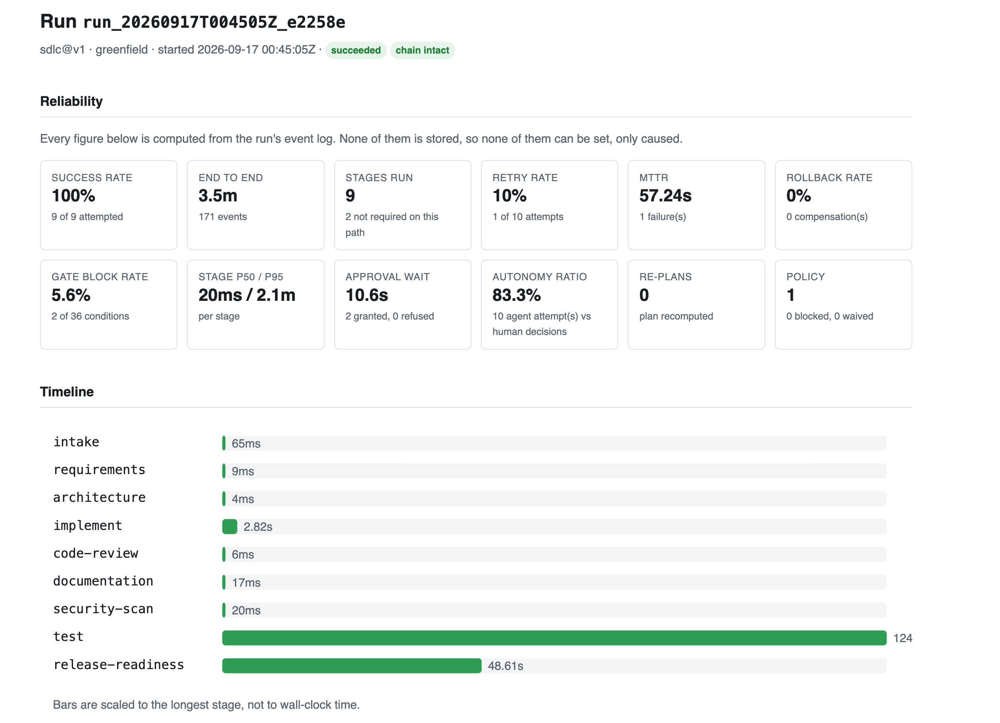
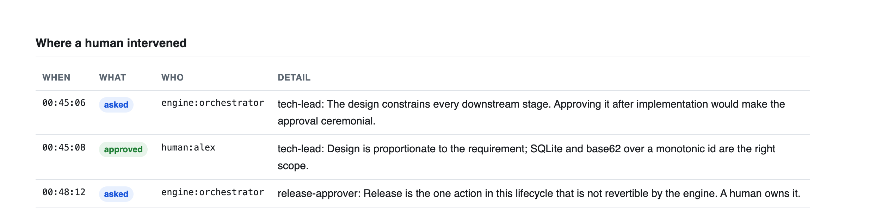

Mandate
A governed agentic software-engineering system.
Mandate turns a requirement written in plain English into a reviewable engineering outcome. It decomposes the work across an explicit dependency graph, has language models perform each stage, holds their output to gates it cannot skip, stops for a named human at the decisions that matter, and records every step in a log you can verify has not been altered.
The lifecycle
Eleven stages, seventeen edges, three conditional paths, three loop-backs, three human
checkpoints. It lives in workflows/sdlc.v1.yaml as data, not code — the engine
contains no lifecycle of its own.
intake │ requirements ├── (ambiguity ≥ 0.3) ──▶ clarification ──[on success]──▶ requirements ├── (has existing code) ──▶ impact-analysis │ architecture [human: tech-lead] │ implement │ ├───────▶ test ──────────[on failure]───────▶ implement ├───────▶ code-review ───[on failure]───────▶ implement ├───────▶ security-scan └───────▶ documentation │ release-readiness [human: release-approver]
Three recorded runs
Each ran end to end and has its events, timeline and report committed. Open any report — they are self-contained pages with no scripts and no network calls.
Built the service
Decomposition, four stages in parallel behind a synchronising barrier, both human checkpoints, validation measured rather than claimed.
succeeded · 171 eventsChanged its own code
Codebase reasoning over real code the system had written, conditional routing that adds a stage, compensation on a real git tree.
succeeded · 179 eventsRefused to ship
Ambiguity scored and routed to a human, three re-plans, convergence from 0.35 to 0.1 — then held at the test gate for want of evidence.
held · 228 eventsA run, as the system recorded it

Where the humans were

What makes it governed rather than a loop
- The lifecycle is data. Changing how software gets built here is a configuration change under review, not a deployment.
- Agents propose; the engine applies. No agent writes to the workspace. They return files they would like written; the engine validates every path and commits them as that stage's commit.
- Claims are measured. A stage that says the tests pass does not define what passing means. The real toolchain runs and the measured figure replaces the claim. A stage that overstates its results fails, naming both numbers.
- Humans own the irreversible decisions. The design everything is built on, and the release itself.
- The record is the product. Every state change, gate verdict, approval, artifact, decision and model call is an event in a SHA-256 hash chain.
Verify it yourself
No API key required — model exchanges replay from committed recordings.
git clone https://github.com/sumyuck/mandate-agentic-sdlc.git cd mandate-agentic-sdlc make demo # the whole tour, offline make verify # build, 868 tests, style